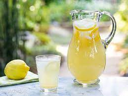

Description
A refreshing drink! Perfect for a hot day!
Ingredients
- 1 cup sugar
- 1 cup water (for syrup)
- 1 cup lemon juice
- 2 to 3 cups cold water (to dilute)
Steps
- Place the sugar and water in a small saucepan and bring to a simmer
- Stir so that the sugar dissolves completely and remove from heat
- While the water is heating for the syrup, juice your lemons
- Depending on the size of the lemons, 4 to 6 of them should be enough for one cup
- Pour the juice and the syrup sugar water into a serving pitcher
- Add 2 to 3 cups of cold water and taste
- Add more water or if you add ice, it will melt and naturally dilute the lemonade
- If the lemonade is a little sweet for your taste, add more straight lemon juice to it
Serve after refrigerating with ice and some sliced lemons!